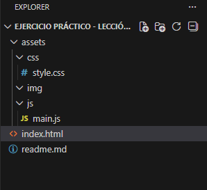

Introducción a estructura

Se requiere separar las carpetas de assets por tipo de contenido.
En este caso, se han creado las siguientes carpetas dentro de assets:
- css: para almacenar los archivos de estilos CSS.
- js: para almacenar los archivos de JavaScript.
- img: para almacenar las imágenes utilizadas en el proyecto.
Esta organización facilita la gestión de los archivos y mejora la mantenibilidad del proyecto a largo plazo.